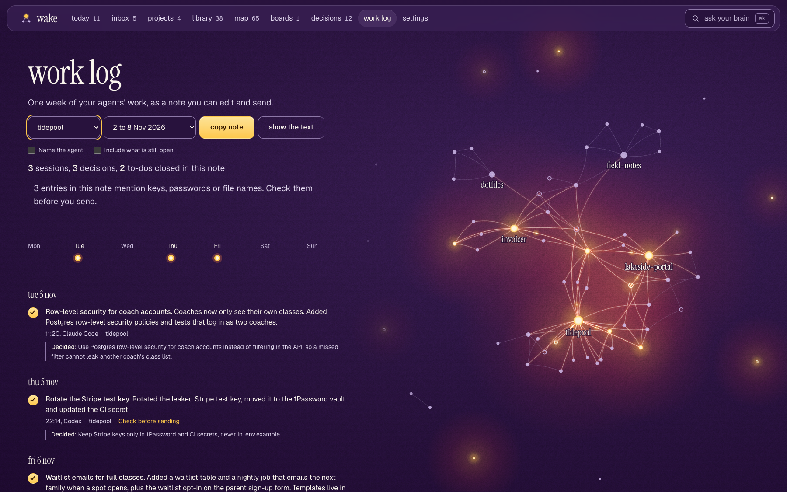
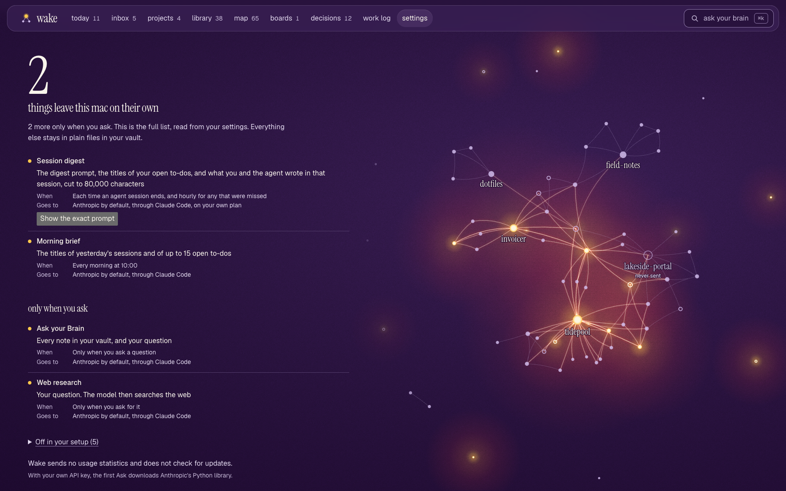

You promise your agent the pricing page. Wake writes a to-do.
Add the pricing page
wednesday, in checkout
You open a session in another repo. It already sees that to-do.
Add the pricing page
done
That session ships it, and Wake ticks it off with a receipt.
Add the pricing page
Done: add the pricing pagepromised Mon in website → done Wed in checkout, session “Pricing page”
today What your agents finished, with the receipt. What needs you. What is with your agents.map Every note, person and ticket, and how they link.inbox Catch an idea now. File it to a project later.boards Lay notes and ideas out on a canvas, then ask about it.library Every note, with what points to it.decisions What was decided, where, and why.
made for people who bill for their time
agents do, you do
Every to-do says who does it. Hand one to your agents and the next session picks it up. Take it back with one click.
a work log your client can read
Pick a client and a week. Wake writes what was done, as a note you can copy into an email. Leave anything out first.
what leaves your mac
Settings lists every path out, read from your real setup, with the exact prompt. Put a client on the never-send list and its new sessions stay on your Mac; its light goes out on the map.

work log One client, one week, as a note. Tick off what stays private, then copy.

settings The full list, the exact prompt, and a never-send list per project. It covers new sessions; older notes stay in the vault.
it fills itself
your agents
session ends
one haiku note
~/Brain
to-dos and decisions, read by every agent
your day
meetings, calendar
~/Brain
morning brief
A note costs about 12,000 Haiku tokens in and 2,000 out for a typical session, and up to about 30,000 in for a long one, on your own Claude plan.
works with
claude code, codex
Each finished session becomes a note. Every new session starts with that repo's open to-dos and decisions. Use one or both.
granola, wispr flow
Each evening your meetings become notes: what was decided, what you owe, who you are waiting on.
google calendar
Today's meetings at the top of the morning brief.
slack
Your to-dos as a Slack list, both ways: tick one in Slack and it is done in Wake within a few hours. You make the list once. Messages that need you land in the inbox, and the morning brief can come to Slack.
jira, confluence
Tickets and pages that need you land in the inbox. When Slack, Jira or Confluence show you delivered a meeting action item, Wake closes it.
obsidian, git
The vault is plain Markdown: open it in Obsidian, push it to your own git remote.
Every connector is off until you turn it on. Wake reads them through the connectors you already added to Claude, so there is no new sign-in. With Codex alone you get session notes, the morning brief and Slack to-dos; meetings, calendar, Jira, Confluence and the Slack inbox need Claude Code. Product names and logos belong to their owners; Wake is independent and not affiliated with or endorsed by them.
plain files you own
Markdown in a folder on your disk. It opens in Obsidian too. Stop using Wake and you keep every note.
~/Brain
projects/ one note per repo or client
log/ sessions, decisions, to-dos by day
ideas/ the inbox
areas/ health, money, clients
meetings/ from Granola or Wispr
boards/ canvases, Obsidian format
briefs/ morning pages
what it needs
a mac
macOS with Python 3.9 or newer.
claude code or codex
Notes are written through your own Claude Code sign-in, or through Codex. No API key. Both agents read the same to-dos and decisions.
connectors
Optional, and off until you turn them on. See works with.
first open
Wake is a direct download. The first time, macOS says it cannot check it: press Done, open System Settings, Privacy and Security, and press Open Anyway. On macOS 14 and earlier, right-click Wake and choose Open.
$59 once
wake
$59 once, a year of updates
The whole app: today, inbox, projects, library, map, boards, decisions
Every agent sees your to-dos and decisions, in every repo
Meetings and calendar in your vault, and a morning brief
Agents tick off to-dos when they finish them, with proof
Not out yet. Leave your email and you get one email when they are.
You’re on the list. One email when it ships, nothing else.
Does my code leave my machine?
There is no Wake server. Two things leave on their own: when a session ends, a trimmed transcript goes to the model through your own Claude Code or Codex sign-in; and every morning, the titles of yesterday's sessions and your open to-dos go out for the brief. Ask and Research send what they read, only when you use them. Slack, Jira, meetings and calendar are off until you connect them. If you add a git remote to the vault folder, Wake pushes to it. Settings shows all of this, with the exact prompt, and a never-send list per project.
With Super Brain your notes stay on your own devices. Your phone, and each person you invite, reads straight from your Mac, encrypted the whole way, so no one in between can read your notes. Every request is checked on your Mac. Disconnect a phone in Settings and it is out on its next request.